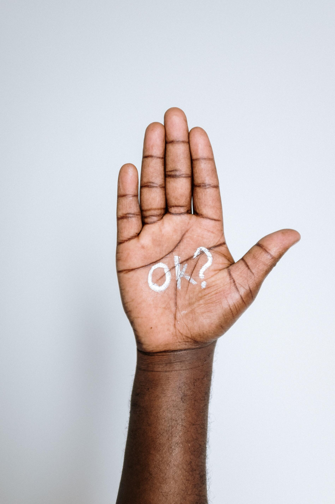
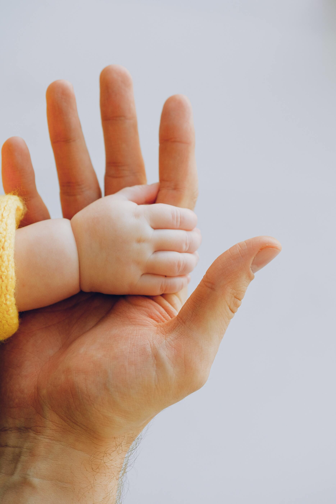

First slide label
Some representative placeholder content for the first slide.

Second slide label
Some representative placeholder content for the second slide.

Third slide label
Some representative placeholder content for the third slide.
Kay story
I was feeling totally healthy with absolutely no health issues as you can imagine the shock i got when i received my results to say i had Stage 2 Invasive Hormone Receptive Cancer
I am the lucky one i had my Surgery and 20 rounds of Radiation which i got through due to good friends and family
I did not have to do Chemotherapy Which i was so lucky I have recovered really well and am taking my Tamoxifen everyday as it was the only one of the anti hormone drugs i could tolerate
I would advise every woman over 70 please treat yourself to a mammogram I had absolutely no Lump or Symptoms and thankfully i was discovered in time
Kay
Nora Carroll Testimonials
II am 62 years old. Following a routine Mammogram, I was recalled for a second screening. I knew when this appointment arrived there was an issue. I had to prepare myself psychologically and try to think positive. I reminded myself that my Mother had a mastectomy at 57 years old and she is now 88.
I had a lumpectomy, precancerous tissue and 4 lymph nodes removed for analysis. Diagnosis was invasive carcinoma, categorised as ER/HER-2 positive. The surgery was a success, lymph nodes were clear so the cancer had not spread. I am now waiting for an appointment with the oncologist to plan my Chemotherapy and Radiotherapy as a preventative measure. I was expecting to have Radiotherapy but not Chemo which was another shock but it’s necessary because of the aggressive form of cancer I had.
My advice would be to attend your Mammogram appointments, which in Ireland occur routinely every two years for women over 50. My diagnosis was at an early stage, the tumour measured less than three centimetres. I cannot speak highly enough of the team at the Breast Cancer Clinic on Eccles Street, Dublin. That is where I had my second Mammograms, biopsies, magseed procedure, ultrasound and met my surgeon. Each department there showed care, kindness and understanding. I received a phone number I could ring if I needed any advice or questions answered before my next appointment. Also the McGivney wing and Operating Theatre in the Mater hospital where I had my surgery. They made what was quite a traumatic experience more manageable and I thank them all.
It helps that I have such confidence in the experts treating me and the advice and care they give. They help you to think positively which is important. For me going out for walks, having a small restoration project to concentrate on or craftwork, whatever you’re interested in, painting, gardening etc. Something you can return to again and again when you feel able during treatment.
Do the exercises recommended post-surgery, they will be a little difficult at the start but they definitely work to get shoulder and arm movement back. I received Emmett Technique from my sister, which is a very gentle muscle release therapy using light touch. I can highly recommend this to ease discomfort, relax the body and improve body movement. I have had this therapy many times before. It is very gentle and very effective.
I am so lucky to have such a supportive family for which I will be eternally grateful, they have helped me in every way possible and their love and care keep me smiling.
Nora Carroll
I wish you were here, with your friends and family.
It was late November a rainy day when I was standing in front of your beautifully painted coffin which you paint together with your lovely nieces just a week ago. Looking back through my memories of all good times, we had together. Talking to you in my heart and asking why such strong independent women like you are here, why a world is so unfair to good people. You were always helping everyone but this time you couldn’t help yourself.
Just a few months earlier, you told to me “I need to visit my doctor”, I did ask you why? You only told me “It’s nothing it is a small infection, no worries, I’ll be fine” unfortunately it wasn’t a small infection it was the 3rd stage of breast cancer.
A month later you were about to start treatment, smiling because you received your wig made of your beautiful curly hairs, my heart was breaking…
Even though you were in this stage you never gave up, you were the strongest fighter I have ever seen, fighting till the last day of your life. Still remember your words: “I’m not giving up! I’m giving myself the best chance to survive, doing all I can to prolong my life”.
I’m begging all of you, please test yourself don’t wait till the last moment, and always fight NEVER give up
Kamil K.